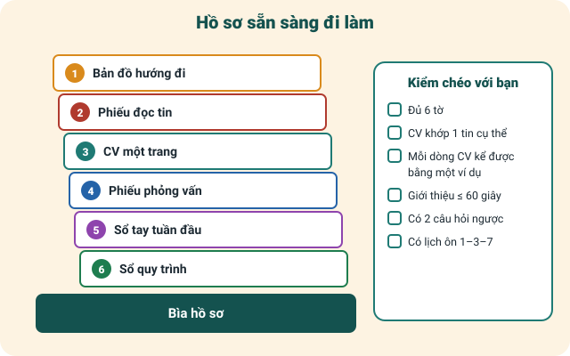

K7 · Tự học và phát triển nghề nghiệp › Bậc 2 Bắt đầu
Ôn tập: Kiểm chéo Hồ sơ sẵn sàng đi làm và lập kế hoạch 30 ngày
Bài cuối khóa. Bạn cần 6 tờ đã làm ở Bài 1–6 và một người bạn cùng học. Mẫu bảng kiểm: Tờ 7.
1. Mục tiêu
- Kiểm chéo Hồ sơ sẵn sàng đi làm bằng bảng kiểm 7 dòng.
- Lập kế hoạch 30 ngày: số hồ sơ sẽ nộp, một phép thử, lịch ôn.
2. Khởi động truy xuất
Câu hỏi trộn từ cả khóa. Trả lời không nhìn gì, rồi mới mở đáp án.
- Bản đồ ba vòng gồm những vòng nào?
- Nêu 3 dấu hiệu cần dừng lại khi đọc tin tuyển dụng.
- Công thức một dòng CV là gì?
- Giới thiệu 60 giây gồm 3 ý nào?
- Vòng học việc mới gồm 4 bước nào?
Đáp án
- Thích làm; làm được, có bằng chứng; điều kiện thật. Xem Bài 1.
- Lương rất cao mà việc mập mờ; đòi nộp tiền; đòi giữ giấy tờ gốc. Xem Bài 2.
- Động từ + việc + kết quả, có số nếu được. Xem Bài 3.
- Hiện tại; đã làm; vì sao chọn nơi này. Xem Bài 4.
- Xem làm mẫu; làm thử; tự ghi quy trình; tự kiểm tra. Xem Bài 6.
3. Giải thích
Bạn vừa tự trả lời câu hỏi trộn từ nhiều bài. Trộn bài khi ôn khó hơn ôn từng bài riêng. Sự khó đó thường giúp nhớ lâu hơn.
Vì sao kiểm chéo? Tự đọc hồ sơ của mình, bạn dễ bỏ qua lỗi vì đã quen. Một người khác đọc sẽ thấy ngay chỗ mập mờ. Đổi hồ sơ với một người bạn, chấm theo bảng kiểm.

Bảng kiểm 7 dòng
- Đủ 6 tờKhông tờ nào để trống.
- Có bằng chứngVòng 2 của Bản đồ có bằng chứng.
- CV khớp tinMỗi yêu cầu bắt buộc có một dòng.
- Kể đượcBạn chọn 1 dòng CV, người kia kể thành STAR.
- 60 giâyNói to, có bấm giờ.
- Tin 4 ýMột tin nhắn mẫu đủ 4 ý.
- Lịch ônSổ quy trình có ô 1–3–7.
Cách góp ý khi kiểm chéo: nói một điều làm tốt, rồi chỉ tối đa 3 điểm cần sửa, mỗi điểm kèm ví dụ. Người nhận chỉ ghi lại, chưa giải thích.
Kế hoạch 30 ngày. Hồ sơ chỉ có ích khi được dùng. Viết 3 dòng:
- Nộp: sẽ nộp bao nhiêu hồ sơ, cho loại việc nào, trước ngày nào.
- Thử: một phép thử nhỏ cho hướng thứ hai ở Bản đồ.
- Ôn: ngày ôn lại khóa này, gợi ý sau 7 ngày và 30 ngày.
Khi đã đi làm, bạn có thể học tiếp lộ trình N3.
4. Ví dụ tại nơi làm việc Việt Nam
Tình huống giả định. Mai và Tuấn học cùng nhóm. Hai bạn đổi hồ sơ và kiểm chéo trong 20 phút.
Tuấn chấm hồ sơ của Mai: đạt 6/7 dòng. Điều làm tốt: CV có số liệu rõ. Điểm cần sửa: Tờ 6 chưa có ô ôn lại.
Mai chấm hồ sơ của Tuấn: đạt 4/7 dòng. Mai chọn dòng "Thiết kế bảng điểm danh bằng Google Sheets". Tuấn kể bị lúng túng ở phần Kết quả. Phần giới thiệu dài 95 giây. Tờ 2 mới có 1 tin tuyển dụng.
Kế hoạch 30 ngày của Tuấn:
- Nộp 4 hồ sơ hỗ trợ kỹ thuật ca tối trước ngày 15 tháng sau.
- Thử: hỏi chuyện một anh khóa trên làm kế toán.
- Ôn: xem lại khóa sau 7 ngày và 30 ngày, có nhắc trên lịch.
Vì sao cách này tốt: góp ý cụ thể, tối đa 3 điểm, nên Tuấn biết sửa gì trước. Kế hoạch có số và ngày, nên kiểm tra được.
5. Thực hành
Tình huống giả định. Bạn kiểm chéo hồ sơ của Nhi. Bạn thấy: Bản đồ ghi "giỏi giao tiếp", không có bằng chứng. CV có dòng "Làm việc nhóm tốt". Phần giới thiệu mất 2 phút. Tin nhắn mẫu: "Anh ơi mai em bận ạ." Tờ 6 có đủ bước và lịch ôn.
Viết góp ý cho Nhi theo cách: một điều làm tốt, tối đa 3 điểm cần sửa, mỗi điểm kèm ví dụ.
Gợi ý 1
Có 4 chỗ yếu, nhưng chỉ chọn 3. Chọn chỗ ảnh hưởng nhiều nhất tới việc được gọi phỏng vấn.
Gợi ý 2
Mỗi điểm cần sửa nên có một câu viết lại mẫu để Nhi dễ làm theo.
Lời giải mẫu
- Làm tốt: Sổ quy trình có số đo cụ thể và lịch ôn 1–3–7.
- Sửa 1: dòng CV "Làm việc nhóm tốt" chưa có bằng chứng. Thử: "Chia việc cho nhóm 5 bạn làm dự án môn học, nộp đúng hạn, đạt 9 điểm."
- Sửa 2: giới thiệu 2 phút là quá dài. Giữ 3 ý, mỗi ý 2 câu, bấm giờ dưới 60 giây.
- Sửa 3: tin nhắn thiếu tên, ca và đề nghị. Thử: "Em chào anh, em Nhi ca sáng thứ Năm. Mai em có lịch khám, xin đổi ca với bạn Lan. Anh đồng ý giúp em nhé."
Dòng "giỏi giao tiếp" trên Bản đồ cũng cần bằng chứng, nhưng để lần sau.
(Chi tiết là giả định để minh họa.)
6. Tự kiểm tra
Chọn đáp án. Mỗi lựa chọn đều có giải thích.
Câu 1. Ôn tập Bài 2. Tin tuyển dụng đòi nộp "phí đồng phục" trước khi đi làm. Đây là dấu hiệu gì?
-
Chưa đúng. Đòi nộp tiền trước khi làm là một trong 3 dấu hiệu cần dừng lại.
-
Đúng. Đúng. Luật cấm buộc người lao động bảo đảm bằng tiền hoặc tài sản (Điều 17).
-
Chưa đúng. Sự chuyên nghiệp thể hiện ở thông tin rõ ràng, không ở việc thu tiền.
Câu 2. Ôn tập Bài 3 và 4. Người tuyển hỏi về một dòng CV mà bạn không kể được. Lỗi nằm ở đâu?
-
Chưa đúng. Hỏi về CV là việc bình thường khi phỏng vấn.
-
Đúng. Đúng. Mỗi dòng CV phải kể được thành ví dụ khi bị hỏi.
-
Chưa đúng. Phần giới thiệu không liên quan đến dòng CV này.
Câu 3. Khi kiểm chéo hồ sơ của bạn, bạn thấy 6 điểm yếu. Bạn nên góp ý thế nào?
-
Chưa đúng. Quá nhiều điểm cùng lúc khiến người nhận khó biết sửa gì trước.
-
Đúng. Đúng. Góp ý ít mà cụ thể giúp người nhận sửa được ngay.
-
Chưa đúng. Không có điểm cần sửa thì kiểm chéo mất tác dụng.
Câu 4. Dòng kế hoạch 30 ngày nào kiểm tra được?
-
Chưa đúng. Không có số, không có hạn, nên không biết đã làm được hay chưa.
-
Đúng. Đúng. Có số, có loại việc, có hạn.
-
Chưa đúng. Chờ cơ hội không phải là kế hoạch hành động.
7. Phản tư
- Sau khóa, tờ nào trong hồ sơ bạn thấy tự tin nhất? Tờ nào cần làm lại?
- Góp ý nào của bạn mình làm bạn bất ngờ nhất?
8. Áp dụng thật
Trong 7 ngày tới, sửa 3 điểm bạn được góp ý. Nộp hồ sơ đầu tiên trong kế hoạch 30 ngày. Đặt lịch ôn khóa sau 7 ngày và 30 ngày.
Khi đi làm, bài Bảng phân công dự án nhóm và Dùng AI an toàn sẽ hữu ích.
9. Siêu dữ liệu
| skill | K7 · Tự học và phát triển nghề nghiệp |
|---|---|
| level | Bậc 2 · Bắt đầu |
| group | N2 |
| framework_map | WEF: Curiosity and lifelong learning; CSfW: 1a Manage career and work life; SkillsFuture CCS: Learning Agility; NACE: Career and Self-Development; LifeComp: L3 Managing learning (chỉ dẫn chiếu) |
| updated | 2026-11-14 |
Hoàn thành bài
Đánh dấu đã học để site gợi ý lịch ôn sau 1, 3 và 7 ngày. Dữ liệu chỉ lưu trên máy của bạn.
Lịch ôn gợi ý: